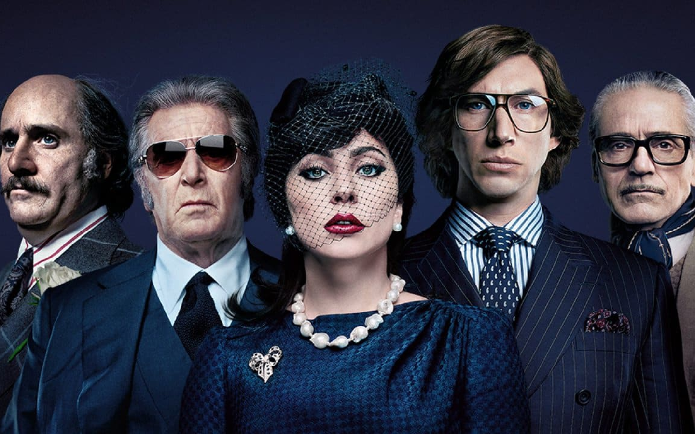

Fil M atch
Dirigido por Ridley Scott, o filme House of Gucci é baseado na história de Patrizia Reggiani, ex-esposa de Maurizio Gucci, membro da família italiana que fundou a grife. A socialite planejou o assassinato do marido, em 1995. Ela foi condenada a 29 anos de prisão.
House of Gucci
MATCH!
link do Trailer: https://www.youtube.com/watch?v=JeY_lxUKjMQ